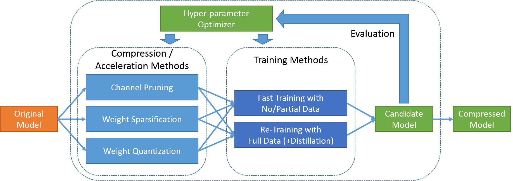

PocketFlow
PocketFlow is an open-source framework for compressing and accelerating deep learning models with minimal human effort. Deep learning is widely used in various areas, including face verification, speech recognition, and natural language translation. However, deep learning models are often computational expensive, which limits their further applications on mobile devices.
PocketFlow aims at providing an easy-to-use toolkit for developers to improve the inference efficiency with little or no performance degradation. Developers only needs to specify the desired compression and/or acceleration ratios and then PocketFlow will automatically choose proper hyper-parameters to generate a highly efficient compressed model for deployment.
Framework
PocketFlow mainly consists of two categories of algorithm components:
- Learner: model compression / acceleration method that takes an uncompressed original model as input and generates a compressed candidate model using certain training methods.
- Hyper-parameter Optimizer: an external controller unit that evaluates the effectiveness of candidate models and searches for the optimal hyper-parameter combination for learners.

Currently, PocketFlow supports following model compression / accelerating methods:
- Channel Pruning:
- Weight Sparsification:
- Weight Quantization:
All the above model compression / acceleration methods support two training methods:
- Fast Training with No / Partial data: The compressed model is directly derived from the original model, by applying either pruning masks or quantization functions. The resulting model can be fine-tuned with a few iterations to recover the accuracy to some extent.
- Re-Training with Full Data (+Distillation): The compressed model is